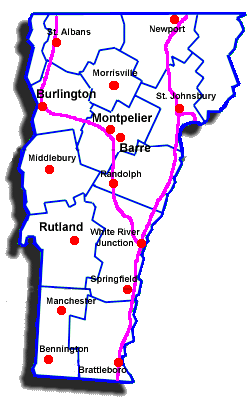

| CITY | Brattleboro | Newport | Rutland | Burlington | Barre |
| Brattleboro | 0 | 176 | 74 | 141 | 114 |
| Newport | 176 | 0 | 128 | 73 | 63 |
| Rutland | 74 | 128 | 0 | 67 | 65 |
| Burlington | 141 | 73 | 67 | 0 | 45 |
| Barre | 114 | 63 | 65 | 45 | 0 |
The map below is uses to help those unfamiliar with the state:

The problem is that you need to find the shortest route which
connects
all cities, with no city visited twice, and you must return to the
starting
city. Note that the starting city really doesn't matter - you may
select
any city as your starting city.
The TSP is an example of a Hamiltonian circuit of a graph. A
Hamiltonian Circuit is defined
as a cycle that passes through
all the
vertices of a graph exactly once.
Exhaustive Search - This would involve enumerating all possible tours and choose the shortest route. For a set of N cities, this would involve generating (N-1)! tours. For example, if you had cities {A, B, C, D} the possible tours would be:
A -> B -> C -> D -> A
A -> B -> D -> C -> A
A -> C -> B -> D -> A
A -> C -> D -> B -> A
A -> D -> B -> C -> A
A -> D -> C -> B -> A
For a total of (4-1)! = 6 tours.
This algorithm is (n-1)!/2 or Θ(n!)